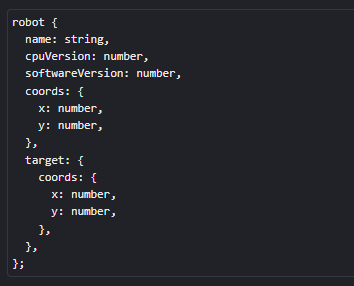

Tarefa: Robot prototype
Intro
A complexidade na fabricação de nossos robôs está crescendo e a cada dia eles contam com novos tipos de membros, novos módulos e capacidades complexas. Fica difícil fazer tudo isso em uma só fábrica. Portanto, decidimos dividir nossa fábrica em várias fábricas separadas. Agora cada fábrica será responsável pela entrega de peças diferentes. Isto deve acelerar o desenvolvimento e a criação de novos robôs.
Nesta fase, podemos identificar esquematicamente 4 componentes dos nossos robôs - o núcleo principal, núcleo de navegação, núcleo de movimento e o corpo do robô, no qual os módulos serão instalados.
Sua tarefa é criar os seguintes módulos de objeto:
-
O mainCore com os seguintes métodos:
- getMainInfo retorna uma string Robot "%name%", cpu version %cpuVersion%
- getAdditionalInfo retorna uma string Update version: %softwareVersion%
- updateRobot pega o parâmetro updateVersion, modifica o robô softwareVersion e retorna uma string %name% updated to %updateVersion%
-
O navigationCore com métodos:
- getCoords retorna a string de coordenadas do robô x=%coords.x% y=%coords.y%
- setTargetCoords pega as coordenadas x e y do destino e os atribui aos campos corretos do robô
O movementCore com moveForward, moveBack, moveLeft e métodos moveRight, aceitando um número step (o padrão é 1) e alterando o coordenada apropriada por step.
O corpo do primeiro protótipo kerbin deve corresponder a este esquema:
O cpuVersion mais recente é 145.4, o softwareVersion mais recente é 23.45, todas as coordenadas são 0 por padrão.
Combine o corpo do robô e todos os módulos necessários usando uma cadeia de protótipos. Todos os métodos de todos os módulos devem estar acessíveis ao robô para funcionamento correto.
